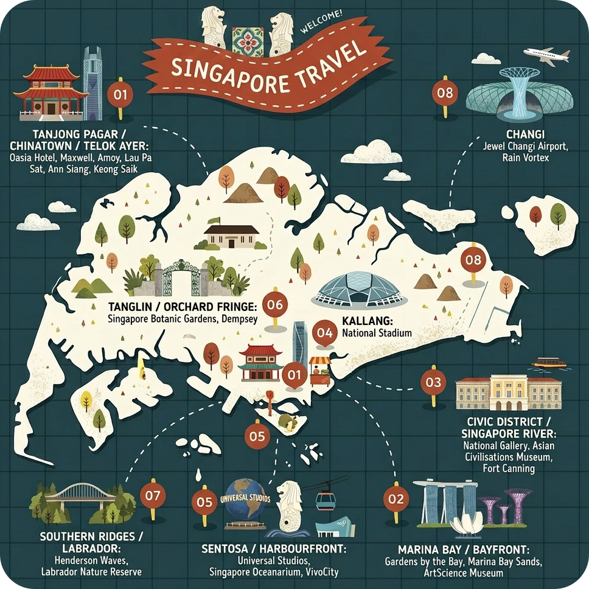
這一帶將是你這趟旅程的核心「生活圈」。舉凡特色酒店、熟食中心、精品咖啡店、歷史老街、時尚酒吧，以及金融中心（CBD）與地鐵站（MRT），皆在步行或短途車程的範圍內。
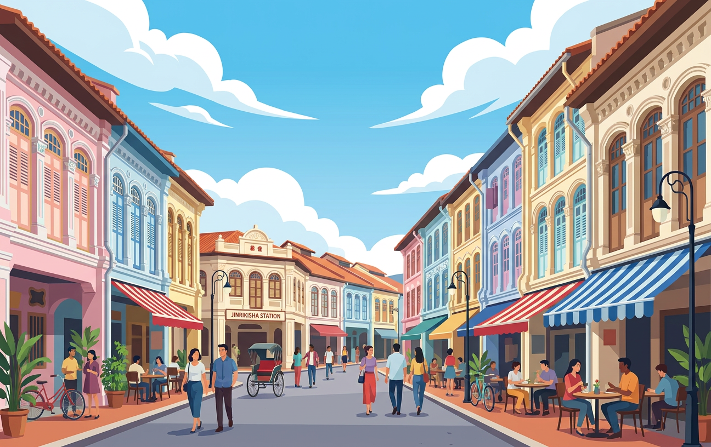
丹戎巴葛街區白天是金融區（CBD）上班族穿梭的商務地帶，夜幕低降後，則搖身一變成為異國餐廳、隱密酒吧、風格咖啡廳、韓式料理與精緻餐飲（Fine Dining）齊聚的時尚據點。
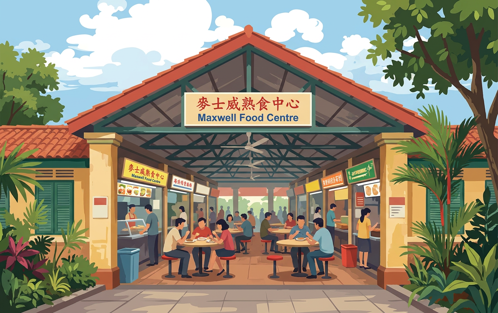
麥士威熟食中心是初訪新加坡的旅客體驗在地小吃文化的最佳入門選擇。無論你想品嚐馳名海南雞飯、傳統廣式粥品，還是南洋黑咖啡（Kopi），這裡都非常適合。
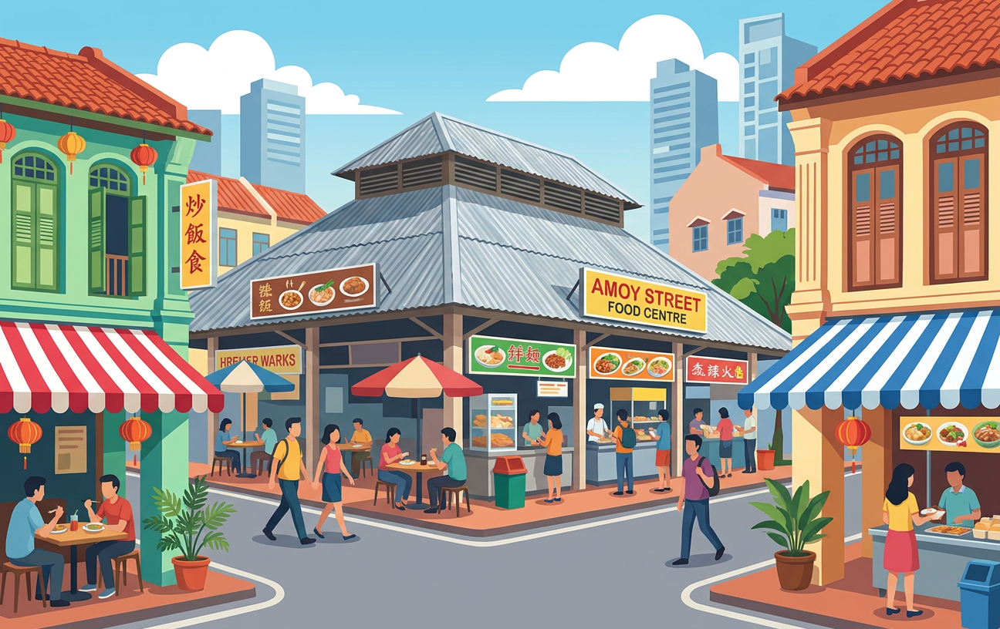
廈門街熟食中心散發著更為道地的「本地上班族」生活氣息，由於座落於金融區（CBD）邊緣，每逢平日午餐時段，便會湧入大量附近的商務白領。是更偏向本地人日常覓食的私房口袋名單。
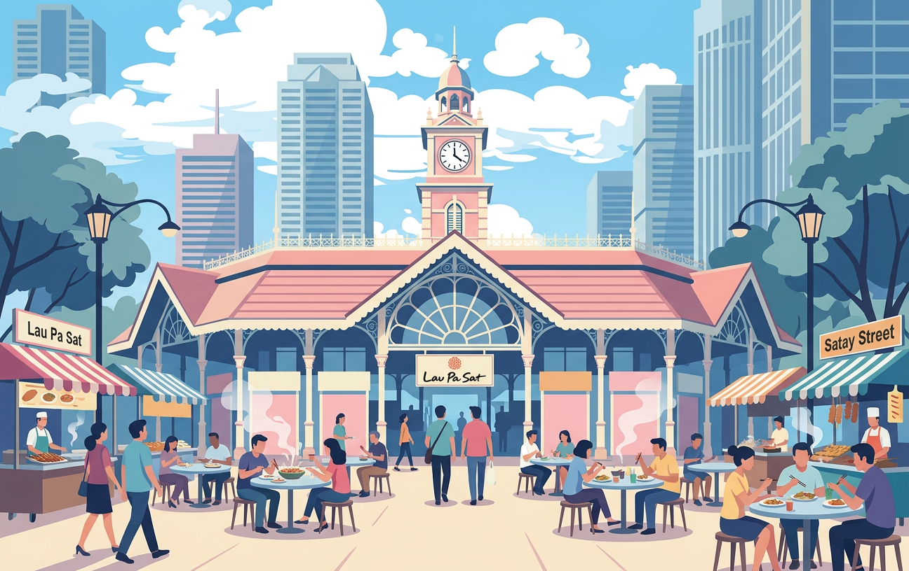
老巴剎是一處對觀光客極其友善的歷史地標。它不單只是品嚐美食的聚落，其建築本身更是一棟位於金融中心（CBD）。夜間這裡最不容錯過的便是戶外的「沙嗲街」（Satay Street），整排炭火直烤的沙嗲攤位煙火氣十足，讓人在摩天大樓包圍下，體驗到新加坡獨一無二的在地露天夜市氛圍。
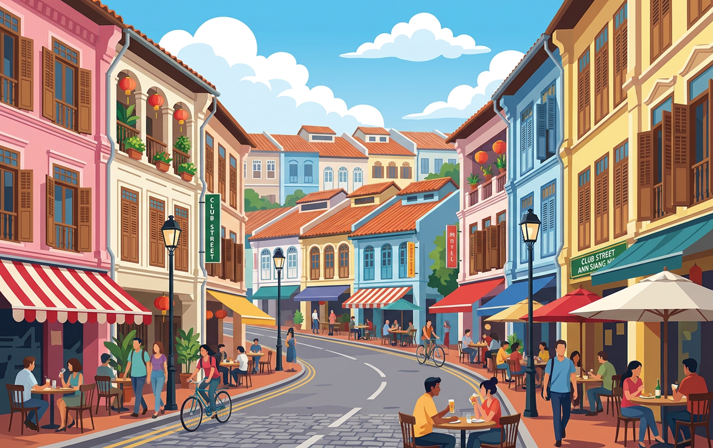
這一帶是新加坡市中心最適合慢活散步、細細品味的區域。Telok Ayer 完美融合了百年古廟、當代餐飲、潮流咖啡與現代辦公大樓；Ann Siang Hill 與 Club Street 則宛如由傳統歷史店屋（Shophouses）改造而成的餐飲與夜生活特區；而附近的 Keong Saik Road 近年來更成為精品設計酒店、頂級酒吧與米其林星級餐廳之地。
濱海灣是新加坡最具代表性的現代城市天際線與景觀區，摩天大樓、濱海灣金沙、濱海灣花園、藝術科學博物館等頂級地標皆在此交織匯聚。
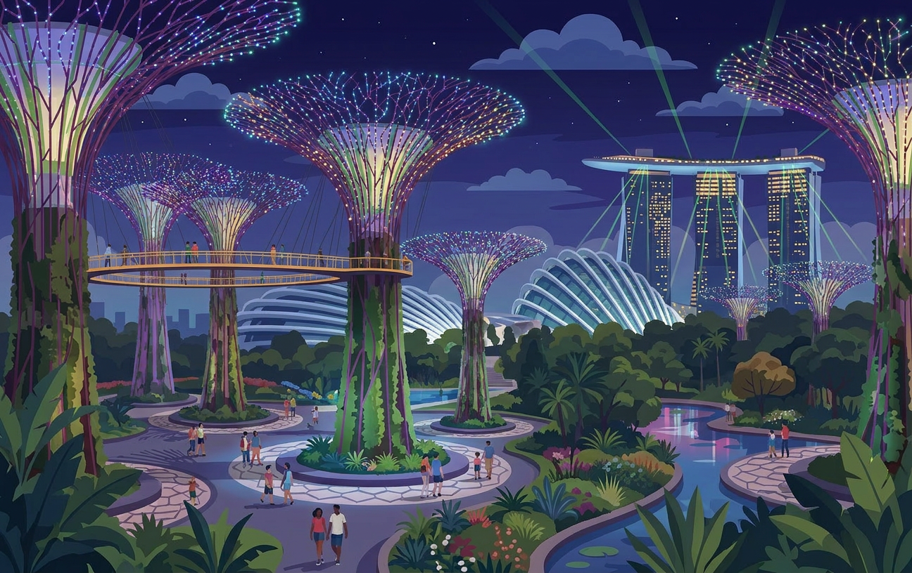
新加坡最經典的現代綠能地標之一。它並非傳統意義上的植物園，而是一座巧妙結合尖端園藝、未來感建築、奇幻燈光秀、前瞻城市規劃與開闊濱海景觀的超大型城市綠洲。其中，擎天樹林（Supertree Grove）在白天呈現科幻感十足的垂直花園景致；夜幕降臨後，巨型樹叢便會亮起璀璨光芒，幻化為極具視覺張力的戲劇感魔幻森林。
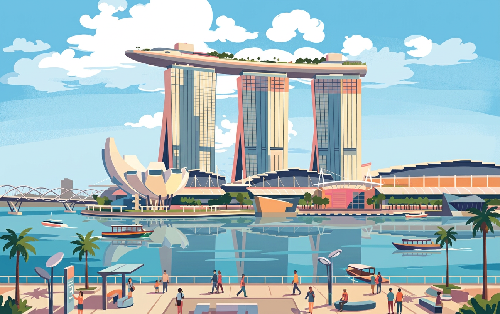
濱海灣金沙是新加坡在全球最具辨識度的建築奇蹟，更是整片濱海灣的核心樞紐地標。整座綜合度假村與地鐵站（Bayfront MRT）無縫相連，其周邊緊鄰藝術科學博物館、濱海藝術步道，並設有可直通濱海灣花園的景觀天橋，無論是購物、賞景、美食還是交通動線都極其便利。
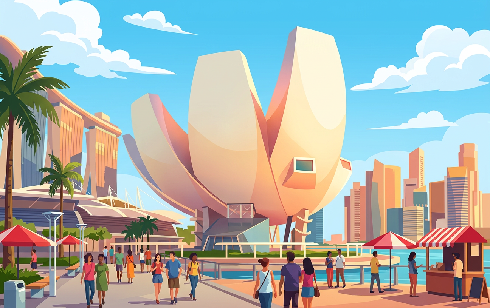
藝術科學博物館座落於濱海灣金沙旁，是一棟以盛開巨型蓮花為靈感設計的經典幾何建築。該館主打將藝術、科學、前沿科技、現代設計與多元文化深度交融的國際級沉浸式大展（如長設互動展《未來世界 Future World》），是濱海灣區內極具代表性、兼具美學教育與視覺震撼的藝術殿堂。
最適合慢步欣賞古典建築、探訪博物館的區域，深深沉浸於文化、歷史與藝術博物館的知性氣息中。
坐落於修復的舊最高法院與舊市政廳建築群內，是全球最大規模的東南亞現代藝術公共收藏地。
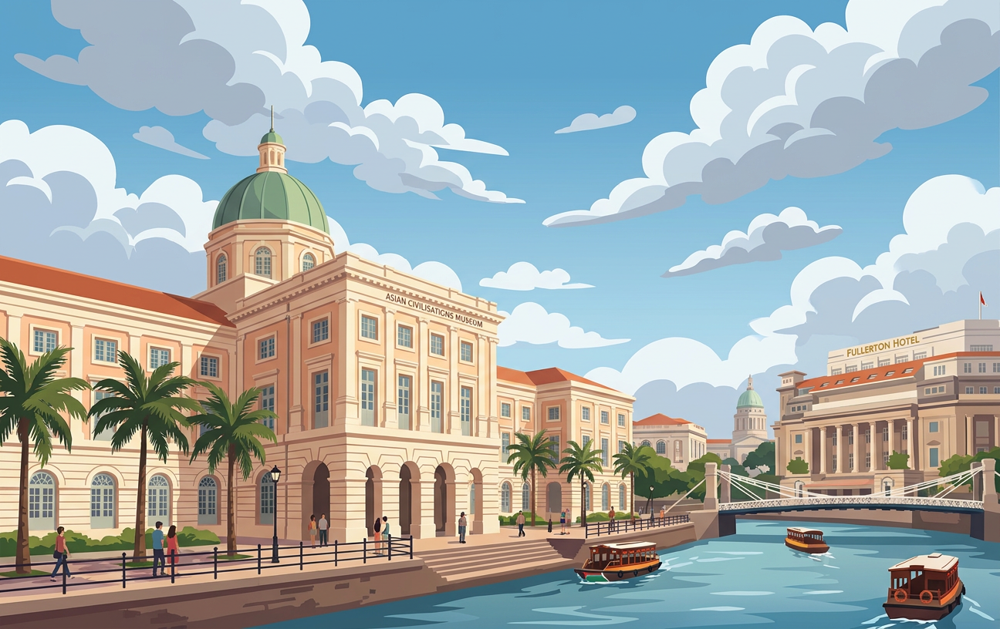
佇立於新加坡河畔，展現亞洲多元文化、古代貿易網絡與海上絲綢之路的世界文明紐帶。
隱匿於市中心的小山丘公園，從古代王朝禁山傳說到二戰地下軍事要塞，層次深厚。
散發著更為純粹的「綠意」與悠閒慵懶的慢活步調，符合「隱世城市綠洲」神髓的世外桃源。
逾160年歷史，新加坡首座且唯一榮獲UNESCO《世界遺產名錄》的英式熱帶皇家植物園。
新加坡體育與娛樂的靈魂心臟，國際巨星演唱會與頂級體育盛事集中於此。
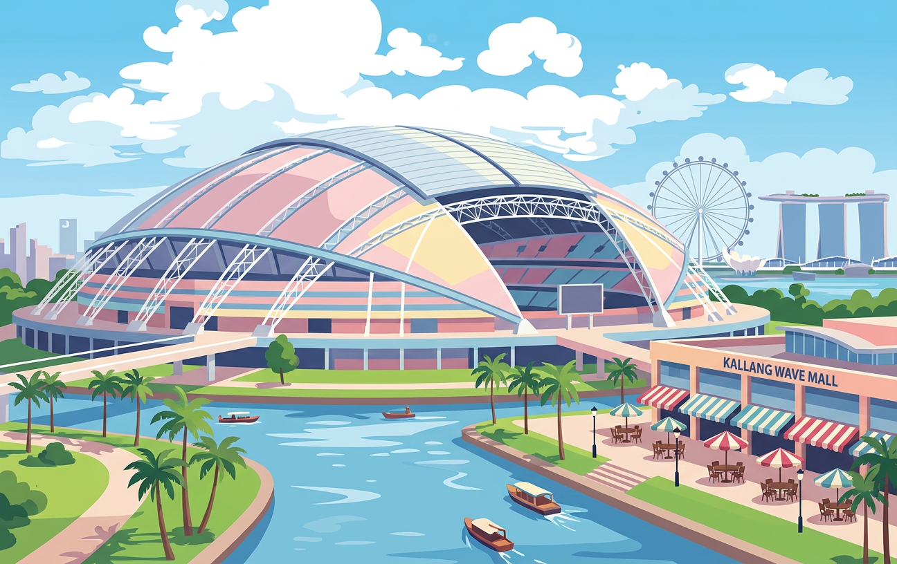
全球最大跨度的可開合穹頂結構，是新加坡舉國盛典的地標。
新加坡最受歡迎的頂級度假與島嶼娛樂天堂，集結名勝世界、環球影城與海洋館。
聖淘沙島上最具指標性的主題樂園，適合與海洋館安排同一天遊覽。
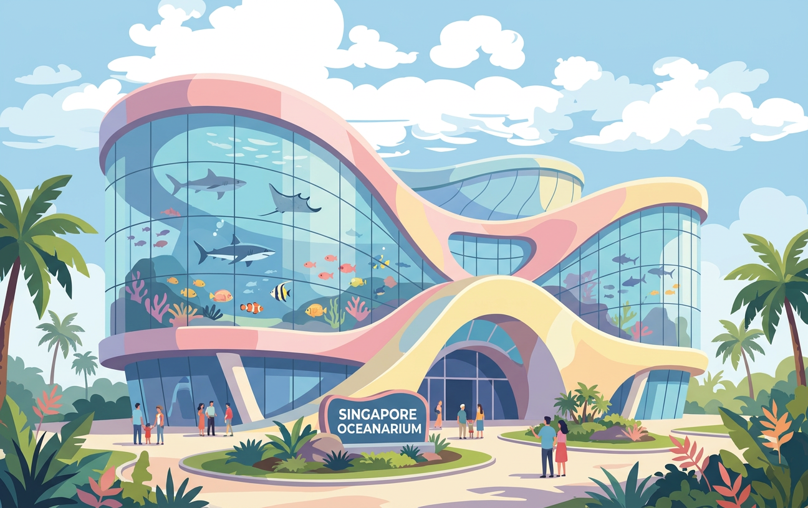
震撼力的巨幕深海觀景窗，展示數以萬計海洋珍稀生物。
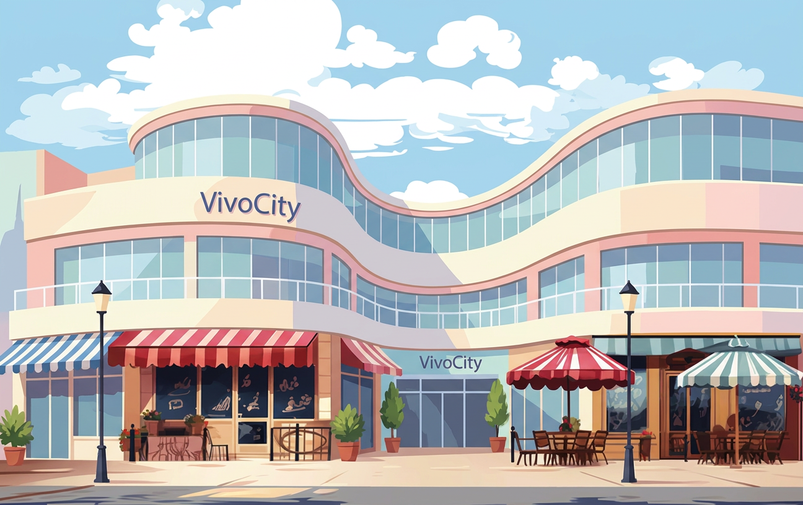
進出聖淘沙島的門戶，全新加坡面積最大的購物商場。
相對幽靜、健行步道完善且能深度擁抱大自然的隱藏版選擇。
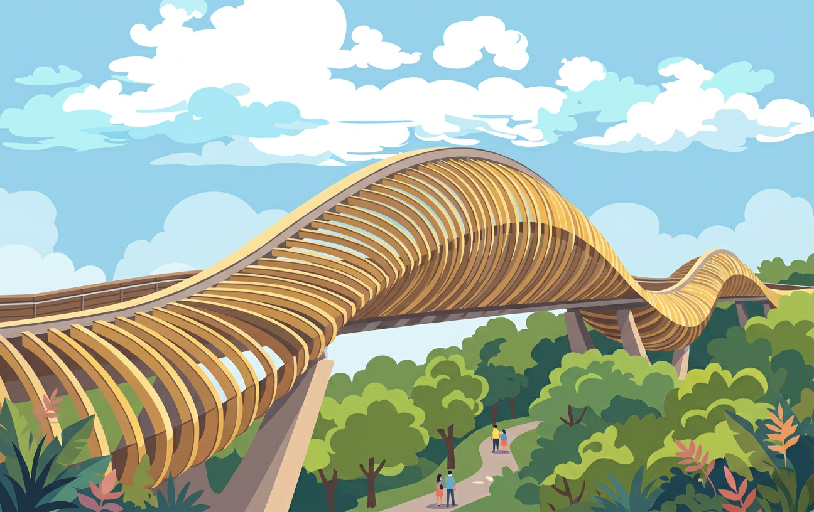
南部山脊健行路線最負盛名的地標，高懸叢林之上 36 公尺，木質波浪結構聞名。
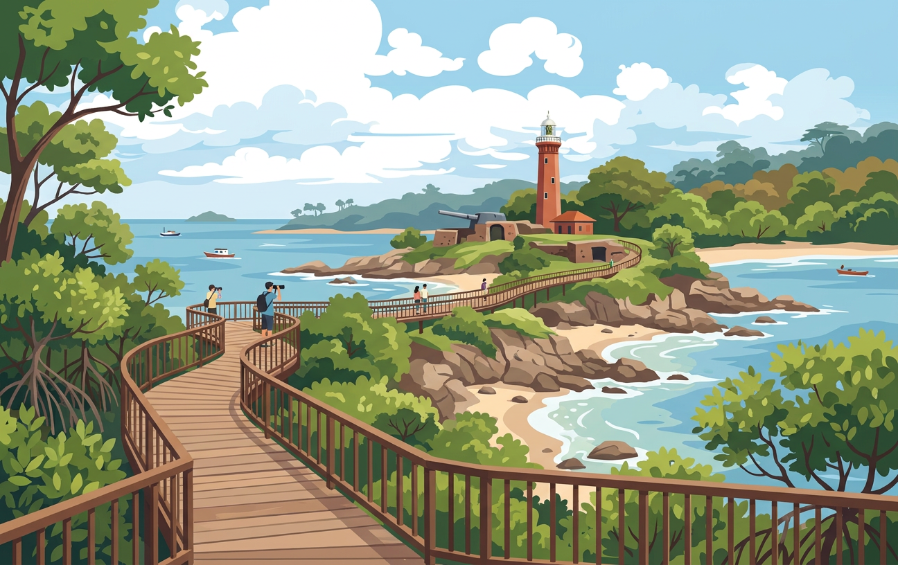
結合開闊海岸景觀、次生林與二戰時期軍事碉堡的生態寶地。